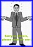
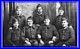

ROZENBAUM scroll down and/or click thumbnails for larger photos
Samuel & Szajndla
X & Hélène & Céline
Régine

Rosa/Balka
Hélène
Céline
Hélène & Régine
Hélène & Charles

Charles Suss
Hélène & family
Régine & Hélène & girls
Jeannette & Berthe
Berthe & Jeannette
Jeannette & Berthe
Berthe & Jeannette
Régine & Suss family
Régine & Jeannette
Suss family & Leon Lopata
Suss family & Lopatas
Régine & Albert & Charles
Régine & Hélène & husbands
Heniek
Heniek (?)
"L.P.R.R." message
Who are they ?
their lives were all taken away too." border="0" width="80" height="53">
another family
another family
Salomon Fistel
Sammy & Jacquot